01
线索分散无流转
公众日常拍下的疑似外来动植物照片，散落在各个社交渠道，缺乏统一收集入口、标准化数据字段与流转追踪机制。
对策：微信小程序轻量入口 + 统一规范上报
把一次野外发现，变成可审核、可追踪、可公开的数据闭环。
公众在野外发现陌生动植物，拍照上传后获得模型初筛候选，结合高精 GPS 打点提交线索。经过专业审核员人工复核后，正式沉淀为公开地图态势与科研数据资产。

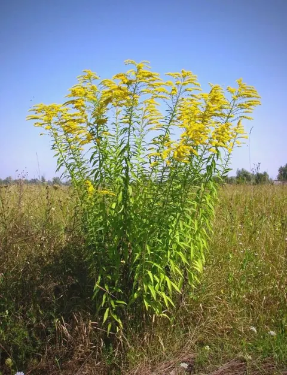
加拿大一枝黄花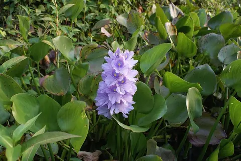
水葫芦外来入侵物种常在公园、河道、校园与农田边缘被公众偶然目击。传统模式下，这些线索散落在群聊与社交媒体中，既缺乏规范时空坐标，也缺乏严格的人工复核边界。
公众日常拍下的疑似外来动植物照片，散落在各个社交渠道，缺乏统一收集入口、标准化数据字段与流转追踪机制。
入侵物种与本土动植物往往形态接近，公众缺乏专业生物学背景，面对疑似目标往往难以及时定种，导致漏报或错报。
未核实的算法预测可能存在误判，若直接公开到决策地图将污染生态档案；必须由审核员人工定种，设立可信防火墙。
系统构建了一条由“公众采集 → 算法初筛 → 人工复核 → 数据沉淀 → 积分激励”构成的闭环流水线，确保每条数据可追溯、可核实。
野外巡查或日常出行目击疑似物种，通过小程序拍摄清晰生境与形态特征图像。
多模态模型进行生物特征匹配，返回最可能的候选物种与置信参考，降低认知门槛。
获取现场精准经纬度、自动逆地理编码获取结构化地址，附带生境备注并提交。
审核工作台对照图像特征与物种档案，最终确认定种、修正偏差或驳回虚假上报。
仅核实通过的记录实时进入公共态势地图与物种档案，沉淀为高质量科研资产。
核实后发放基础积分（+20）与高质量加分（+10），累积徽章成长并在商城兑换。
无需臃肿下载，微信扫码即用。系统把前台公众轻量化采集与后台审核员桌面工作台有机融为一体。
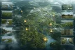
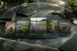
涵盖首页、快速相机、相册选图、经纬度自动解析、现场环境描述，操作链路极简。
待审列表检索、AI候选与人工定种对照、驳回原因勾选、审核日志留痕，把好数据大门。
全量已核实点位分布、物种分类过滤、时空聚类展示，为公众和管理者提供态势感知。
收录动植物真实形态特征、原产地、生态危害、官方防治指引与辨识要点，辅导公众认知。
关联天敌关系、共生物种与扩散途径字段，帮助理解入侵种在本土生态网中的破坏机制。
达成 Expert 徽章等级后开放已核实数据集 CSV 一键导出，服务高校课程或科学分析。
系统收录国内高关注度的 20 种外来入侵物种，涵盖植物、鱼类、昆虫与检疫性病害。页面展示完全基于项目真实物种库资产，突出生物学特征与危害事实。

智谱 GLM-4V 多模态算法作为初筛工具，主要作用是缩窄物种范围并提供候选特征对照。系统在业务设计上严禁“算法直接入库”，必须经由具名审核员人工复核方可进入公开态势。
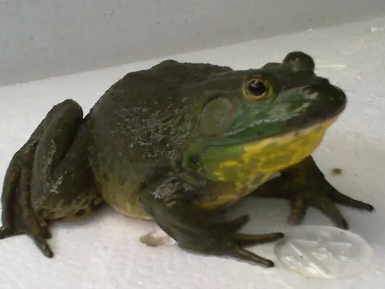
中风险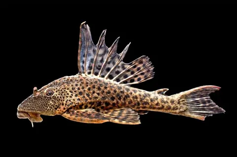
中风险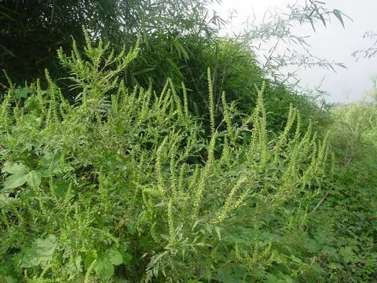
高风险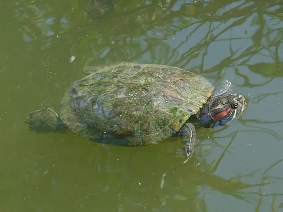
中风险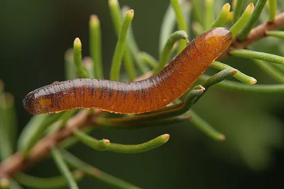
高风险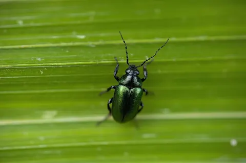
中风险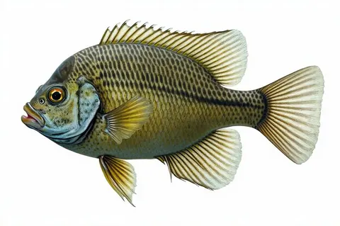
中风险依据核实上报次数梯度解锁权限与每日上报限额，严防恶意滥用：
系统将“发现人、时空坐标、现场图片、算法初筛、审核员确认、物种分类”完整串联，保证每一处地图打点都经得起回溯检验。
公开态势展示页面严格遵循 GET /api/reports?status=approved 数据口径，绝不公开未审核或被驳回的垃圾线索。
公众上报必须防刷分、防重复、防越权。系统通过密码学指纹、地理时空网格与信用熔断，构建了完备的防御逻辑。
上传图片经过 sharp 格式安全校验后，计算完整 MD5 哈希存入 image_fingerprints 表。7 天内相同图片禁止重复提交，直接阻断网络盗图和本地重复刷分。
上报时以 GPS 坐标为中心计算 200 米空间网格。若该网格内在 12 小时内已有同类物种上报记录，触发时空频控拦截，防止单点短时间连续密集打点灌水。
私有接口强制校验 JWT 令牌（生产密钥强校验 ≥32位）；严禁跨用户越权访问订单或通知。若恶意提交虚假记录，不仅扣除积分，积分低于 0 将触发熔断禁止上报。
拒绝不必要的工程复杂性。微信原生框架 + Node.js/Express + SQLite，配合全覆盖的自动化测试，实现了高内聚、易部署、免沉重运维的优秀技术范例。
species-sentinel-xmy.azurewebsites.net)，承载认证、上报、审核与商城 API。
Azure App Service
invasive-species.db，严格外键约束、WAL 事务支持、包含 reports、species、image_fingerprints 等核心表。
WAL · ACID 事务
外来物种哨兵不仅是一个上报工具，更是一套连接“公众观察、多模型辅助、专家审核、地图态势感知与激励运营”的完整生态工程实践。
从野外随手一拍，到经纬度逆地理打点、审核员把关，再到公开地图沉淀，各业务阶段无缝衔接。
坚持“算法初筛仅供参考，人工复核决定数据公开”的技术伦理，以三层反作弊体系确保每一条数据真实有效。
积分体系、徽章等级阶梯与商城兑换机制，把生态保护转变为公众长期持续参与的日常习惯。